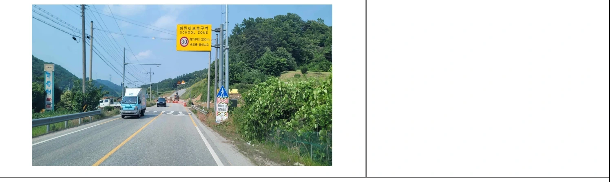

719. Which of the following are the safest ways to drive in the given situation? (Select TWO)

- ①Drive within the maximum speed limit, and be prepared for sudden hazards as you are driving in a school zone.
- ②Proceed quickly if there are no work vehicles even if it is a construction site.
- ③Turn on the hazard lights, and then speed up to proceed.
- ④There is no need to pay attention to the road conditions as the road is not busy.
- ⑤At a crosswalk, you must come to a complete stop before proceeding even if no pedestrians are present.
Show answer
Answer
① Drive within the maximum speed limit, and be prepared for sudden hazards as you are driving in a school zone.
⑤ At a crosswalk, you must come to a complete stop before proceeding even if no pedestrians are present.
Reference
The photo shows a children's protection zone, so you must drive at a speed of 30 km per hour or less and be prepared for sudden danger. In addition, among crosswalks in child protection zones, in front of crosswalks without signals, you must stop temporarily and proceed regardless of whether there are pedestrians (Article 27, Paragraph 7 of the Road Traffic Act). On the other hand, it is not correct to say ② that even in a construction zone, you can proceed quickly if there are no work vehicles, ③ that you must turn on your emergency lights and increase your speed, and that you do not need to be careful because it is a quiet road.
Reference text is a machine translation for study.